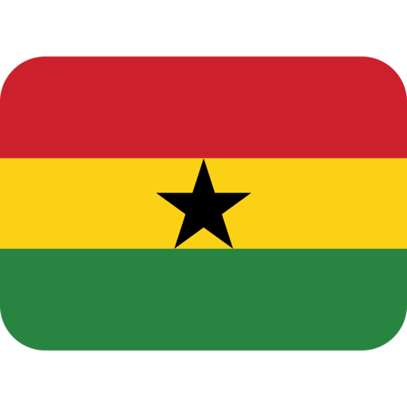

About Me
My name is Godfred Zonyrah. I live in Ghana Tema to be precise. I enjoy Web development and learning new technology. I work as a teacher and also love to try new things and challenge my self in other to the best version of my self.
Tema Ghana
Ghana, officially the Republic of Ghana, is a country in West Africa. It lies adjacent to the Gulf of Guinea and the Atlantic Ocean to the south, sharing a border with Ivory Coast in the west, Burkina Faso in the north, and Togo in the east. Ghana covers an area of 239,567 km2 (92,497 sq mi), spanning diverse ecologies, from coastal savannas to tropical rainforests. With nearly 35 million inhabitants, Ghana is the second-most populous country in West Africa.
Official Flag of Ghana